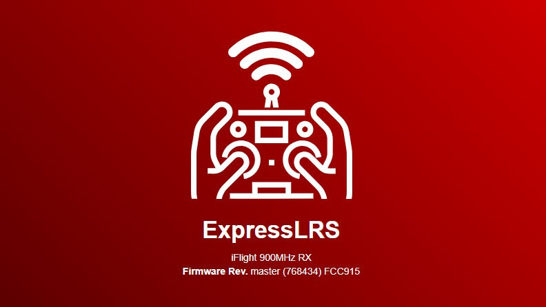
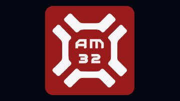

TLRS - прошивка системы управления (RX-TX) ELRS с защитой от спуфинга.
ℹ️ Российская прошивка для приемников и передатчиков ELRS с защитой от спуфинга.
В этой прошивке реализовано изменение частот управления FPV-дронами, а также алгоритмы защиты от спуфинга (навязывания команд на принудительное отключение моторов, «перегазовку», избыточного крена и рысканья).
Также, в этой прошивке действительность пакетов CRSF уже зависит не только от контрольного числа или OTA, но и от времени передачи. Таким образом, если дрон закидывают предыдущими синфазно-квадратурными данными, он уже не будет выполнять эти команды.
На текущий момент существует несколько версий данной прошивки. В каждой версии использованы разные алгоритмы защиты.
⚠️ Разные версии прошивок между собой не совместимы.
📎
(новейшая!)
ℹ️ TLRSX и TLRSX2 - идентичные прошивки, с разными алгоритмами шифрования.
____________________________________________
Так как в июне 2025 прошивка "утекла" в открытые источники, выкладываем на Платформе.
С разработчиком прошивки публикация согласована.
⚠️При разработке
вероятность "утечки"
была учтена.
В любом случае,
не забываем менять binding-фразы
при поддержке
#ПРОШИВКА
#FPV
#техник_fpv
#управление
Это вложение из поста t.me/platforma_fpv/2/1648

Прошивка ORANGE.
ℹ️ Российская прошивка для приемников и передатчиков ELRS, особенно рекомендуется для пользователей mavlink.
Установка
любой
частоты и
параметров канала связи
для лучшего прохождения РЭБ.
Предыдущие версии:
⚠️ Разные версии прошивок между собой не совместимы.
____________________________________________
Так как в июне 2025 прошивка "утекла" в открытые источники, выкладываем на Платформе.
С разработчиком прошивки публикация согласована.
при поддержке
#ПРОШИВКА
#FPV
#техник_fpv
#управление
Это вложение из поста t.me/platforma_fpv/2/1659

Прошивка RED.
ℹ️ Российская прошивка с альтернативной защитой от спуфинга (дизарм в воздухе, переворот).
Отличия от
:
- иной способ защиты от спуфинга,
- другие рабочие диапазоны частот.
⚠️ Прошивки
и RED, а так же разные версии прошивок между собой не совместимы.
____________________________________________
На данный момент считается устаревшей.
С разработчиком прошивки публикация согласована.
при поддержке
#ПРОШИВКА
#FPV
#техник_fpv
#управление
Это вложение из поста t.me/platforma_fpv/2/1658

TBF - российская прошивка для полетного контроллера, с защитой от спуфинга.
ℹ️ TBF (TBetaFlight) - отечественная замена прошивке Milbeta, имеет ряд преимуществ, где одно из –
защита от спуфинга
.
Это модифицированная прошивка BetaFlight v4.6. Открывает ряд полезных возможностей для FPV дрона.
На скриншоте показана прошивка на TBF с помощью программы
Актуальные версии прошивки на 29.07.2025: TBF-3 и TBF-4.
TBF-4 новейшая (много функций, но
пока нет антидизарма
(будет позже).
TBF-3 предыдущая версия, есть антидизарм.
Ниже про каждую версию.
✅
TBF-4 (новая версия).
На 29.07.2025 в TBF 4:
- Режим
удержания высоты
. Колебания вверх-вниз присутствуют, но не критичные. Полетный контроллер сам избирает газ висения - пригодится для ретрансляторов и прохождения РЭБ в период FAILSAFE.
- Режим
удержания позиции
по GPS. Цели и ограничения здесь понятны.
- Управление видеосигналом
от 100 МГц до 7,4 ГГц
, включительно.
- Возможность
смены частоты видеосигнала
во время полета.
-
ARMING с ненулевым положением стика газа
🔥. Первоначально ARM произойдет с небольшой задержкой (это лишний раз обратит внимание пилота).
-
"Вечный" FAILSAFE
. При потере связи дрон не упадет, а продолжит полет. С
режимом удержания высоты
(да и без него) это отработает отлично.
В ближайшее время в TBF 4 постепенно появятся:
Защита от DISARM
. В полете дрон просто "разучится" останавливать моторы, а возвратные птички спокойно можно будет "дизармить" с пульта после приземления. В сочетании с новым режимом FAILSAFE можно использовать любые прошивки управления (не обязательно
TLRS X2
и ей подобные).
- Управление
питанием VTX
.
- Режим
засады
.
- Функция
суицида
TBF-3. Предыдущая версия.
1. Антиспуфинг.
2. Расширенный режим FAILSAFE.
3. С прошивкой TBF открывается возможность переключения видеоканалов при арме (для функционала BackPack).
Особенности применения TBF-3.
1. После срабатывания failsafe - дизарм в принципе невозможен (отключается эта функция).
Включить антидизарм можно, включив и выключив с тумблера режим failsafe.
2. Из-за отключения дизарма - нет проверки на положение стика газа, при включении дрона нужно быть очень внимательным, если газ не в нуле, дрон сразу взлетит.
3. Из-за версии Betaflight 4.6 - настройка возможна только через
Betaflight.
4. Видео каналы переключаются нормально, с тумблера и при запущенных моторах.
5. Из-за бесконечного 1 этапа failsafe - не подходит для учебных целей, при потере связи дрон просто улетит, пока не сядет АКБ.
Внимательно прочтите инструкцию:
⚖️ Сравнение TBF-3/TBF-4 с Milbeta.
1. Версии Betaflight: TBF3 - 4.6, / Milbeta - 4.4.3 и 4.5.1.
2. Переключение видео при арме: TBF3 - да, / Milbeta - да.
3. Режим failsafe: TBF3 - бесконечный 1 этап, / Milbeta - все таймеры увеличены в 10 раз.
4. Маскировка экрана: TBF3 - нет (пока в разработке), / Milbeta - да.
5. Защита от дизарма в воздухе. TBF3 - да, / Milbeta - нет.
📎
Не умею отображать вложенные ссылки на топики
🧵Для прошивки полетного контроллера рекомендуем следующие программы:
-
(компьютер с Windows),
-
(компьютер с Windows),
-
(устройство на Android).
⚠️ Перед прошивкой рекомендуем сделать
полный дамп настроек
с помощью Betaflight Configurator или
с помощью STM32CubeProgrammer.
при поддержке
#ПРОШИВКА
#прошивка_для_FPV
#FPV
#техник_fpv
#полетный_контроллер
Это вложение из поста t.me/platforma_fpv/2/1284

G13 - Российская прошивка для плат ESP32 различных модификаций, позволяющая управлять дополнительным оборудованием.
Виды прошивок:
➡️ G13 Junio
SmartVRX
➡️ G13 Double crsf output
(TX) и
FpvHub
✔️ Прошивки
G13 Junio
SmartVRX
предназначены для одной задачи -
управление видеоприемником (VRX) с тумблера пульта через радиоканал управления (ELRS/TBS).
* Проще говоря - переключение видеоканалов в полете (с пульта).
Тем не менее, это разные прошивки, ниже отличие.
-
G13 Junior
используется для видеоприемников собранных для очков (такие как Skyzone SteadyView или Foxeer Wildfire) с уже прогруженной в них сеткой каналов.
Переключение видеоканалов осуществляется в рамках этой сетки.
-
G13 SmartVRX
работает с видеоприемником RX 5808. В нем нет загруженной сетки и можно напрямую указывать (устанавливать) любую частоту в диапазоне от 4,8 до 6,0 ГГц.
✔️ Прошивки
G13 Double crsf output
(TX) и
FpvHub
предназначены для одной задачи -
использование двух систем управления
(например ELRS + TBS, ELRS915 + ELRS2.4), где
Double crsf output
- передатчики,
FpvHub
- приемники.
- G13 Double crsf output (TX)
подключение двух внешних передатчиков к пульту управления.
-
G13 FpvHub (RX)
подключение к полетному контроллеру 2-х приемников, прямое управление каналами видеопередатчика (VTX).
ℹ️
. Бесплатно.
📝
при поддержке
#ПРОШИВКА
#прошивка_для_FPV
Это вложение из поста t.me/platforma_fpv/2/1716

Прошивка Юниор (Junior) от G-13
ℹ️ Прошивка для простого управления видео_каналами с пульта. Позволяет переключать заранее настроенные видеоканалы в полете, до 10 каналов в рамках сетки VRX.
О прошивке ЮНИОР
Совместимое оборудование
:
Видеоприемники (на выбор):
- SKYZONE Steadyview V3.3,
- SKYZONE SteadyView X 5Ghz,
- SKYZONE SteadyView X 5.8 Ghz,
- Foxeer Wildfire,
- 5.8 VRX «Аналогов нет»,
- 1,2 VRX «Аналогов нет»,
- FT1200,
- FT3500.
Приемник управления (на выбор):
- любой ELRS,
- любой TBS.
Инструкции
по прошивке
📎
🎞 На фото видеоприемник упакован в
(лайфхак для технического специалиста)
📦
Кейсы для готовых решений G13
#ПРОШИВКА
#FPV
#техник_fpv
#видео
#Прошивка_для_переключения_видеоканалов
Это вложение из поста t.me/platforma_fpv/2/1583

Таблицы частот и мощностей для видепередатчиков:
Скачать файлы с таблицами.
📎
:
каналов - 64,
мощность - 5 W,
диапазон частот - 5,3-5,9 GHz.
📎
:
каналов - 40,
мощность - 1,6 W,
диапазон частот - 5,6-5,9 GHz.
📎
:
каналов - 40,
мощность - 2,5 W,
диапазон частот - 5,6-5,9 GHz.
📎
:
каналов - 64,
мощность - 2,5 W,
диапазон частот - 4,9-5,9 GHz.
📎
:
каналов - 40,
мощность - 2,5 W,
диапазон частот - 5,6-5,9 GHz.
📎
:
каналов - 48,
мощность - 2,5 W,
диапазон частот - 5,3-5,9 GHz.
📎
(серебристый китайский):
каналов - 48,
мощность - 3 W,
диапазон частот - 5,3-5,9 GHz.
📎
(китайский):
каналов - 48,
мощность - 3 W (таблицы мощности нет),
диапазон частот - 5,3-5,9 GHz.
📎
:
каналов - 16,
мощность - 2 W,
частота - 3,17-3,47 GHz.
📎
:
каналов - 5,
мощность - 2 W,
частота - 3,25-3,37 GHz.
📎
:
Передатчик 80-канальный, но одновременно может работать только по сетке 64-канала, поэтому для него загружено 2-ва файла с сетками по 64 канала.
Foxeer 4.9 - 6G Reaper Infinity 10W 80CH_A_B_E_F_R_H_L_X:
каналов - 64,
мощность - 10 W,
частота - 4,9-5,9 GHz.
Foxeer 4.9 - 6G Reaper Infinity 10W 80CH_A_B_E_F_R_H_U_O
каналов - 64,
мощность - 10 W,
частота - 5,3-5,9 GHz.
📎
:
каналов - 56,
мощность - 3 W,
частота - 4,9-5,9 GHz.
❗️Вы можете самостоятельно сгенерировать VTX таблицу под нужную модель, воспользовавшись
.
🖥 Установка
1. Скачать файл на компьютер.
2. Подключить дрон к компьютеру.
3. Подключить к дрону АКБ.
4. Запустить Betaflight Configurator.
5. Нажать кнопку "Подключить".
6. Перейти в раздел "Видеопередатчик".
7. Нажать кнопку "Загрузить из файла".
8. Выбрать ранее сохраненный файл.
9. Нажать кнопку "Сохранить".
📖
#ПРОШИВКА
#прошивка_для_FPV
#FPV
#техник_fpv
#видео
Это вложение из поста t.me/platforma_fpv/2/1168

AM32 - прошивка для 32-битного регуляторов оборотов моторов (ESC)
С июня 2024 компания BLHeli прекратила поддержку прошивок BLHeli_32 для для 32-битных ESC.
Альтернативой этой прошивки BLHeli_32 является прошивка AM32.
AM32 - относительно новая прошивка для регуляторов оборотов с открытым исходным кодом, которая выступает альтернативой BLHeli_32. В ней предусмотрена поддержка большинства таргетов BLHeli32; работа с различными протоколами ESC телеметрии; поддержка двухстороннего DSHOT (протоколы DSHOT 300/600); переменная частота ШИМ для обеспечения наиболее надёжной и быстрой работы моторов.
Есть поддержка синусоидального режима запуска для разгона моторов больших размерностей.
📎
Непроверенная внешняя ссылка
Онлайн-конфигуратор AM32
Онлайн-конфигуратор AM32
Непроверенная внешняя ссылка
Таблица совместимости прошивок с оборудованием
Таблица совместимости прошивок с оборудованием
Непроверенная внешняя ссылка
Скачать прошивку AM32
Скачать прошивку AM32
Непроверенная внешняя ссылка
Инструкция как прошить прошивку AM32 на оборудовании BLHeli_32
Инструкция как прошить прошивку AM32 на оборудовании BLHeli_32
#ПРОШИВКА
#прошивка_для_FPV
#прошивка_для_регуляторов_оборотов
#FPV
#техник_fpv
Это вложение из поста t.me/platforma_fpv/2/1342
Программы и
#прошивка_периферийного_оборудования
➤ Аппаратура управления FPV:
➤ Аппаратура управления DJI:
➤ Прошивка для БПЛА
Это вложение из поста t.me/platforma_fpv/13/439

Как «раскирпичить» передатчик
ℹ️ Если при прошивке неправильным таргетом (прошивкой не для своей модели) или другой ошибки передатчик превратился в «кирпич» - не работает, не раздает wi-fi, его можно попробовать восстановить («раскирпичить») прошивкой с помощью USB-кабеля (метод прошивки в ExpressLRS Configurator – UART).
Для "раскирпичивания" нужно перевести передатчик в режим загрузчика.
Рассмотрим на примере двух передатчиков BetaFPV 915 Micro TX и HappyModel ES900TX.
➡️ Для
BetaFPV 915 Micro
TX нужно переключатели установить в положение:
1-2 и 5-7 – в нижнее положение;
3-4 – в верхнее положение.
➡️ Для
HappyModel ES900TX
, снять крышку и поставить переключатели (отсчет от USB-порта):
1-4 – в нижнее положение;
5-6 – в верхнее положение.
1. Подключить с помощью USB-кабеля передатчик к компьютеру:
- BetaFPV 915 Micro TX – USB Type C;
- HappyModel ES900TX – micro USB.
2. В диспетчере устройств, в разделе «Порты (COM и LPT)» определить номер порта, по которому подключен передатчик.
3. В ExpressLRS Configurator, после выбора правильного таргета:
- выбрать метод прошивки – UART;
- в поле действия выбрать порт, по которому подключился передатчик, из диспетчера устройств;
- в параметрах прошивки поставить галочку – Стереть перед прошивкой;
- нажать кнопку – ПРОШИТЬ.
📎
#ПРОШИВКА
#FPV
#техник_fpv
#управление
Это вложение из поста t.me/platforma_fpv/2/1177

Как подключиться по WI-Fi к приемнику на MILELRS
.
ℹ️ MILELRS - прошивка оппонентов, для управления FPV.
Не имеет стандартного пароля: каждая шифрованная пара (приемник-передатчик) имеет свой уникальный пароль.
К приемнику на MILERLS подключиться по Wi-Fi можно двумя способами
1. Получить пароль, скачав прошивку.
Понадобиться TTL адаптер и программа "
".
Получать пароль необходимо в том случае, если нужно посмотреть настройки приемника (например частоты). В ином случае можно сразу прошивать на свою прошивку (п.2).
2. Сбросить настройки до значений «по-умолчанию».
Сброс настроек нужен для того, чтобы можно было прошить приемник на свою прошивку (например KapibaraLRS).
- подать питание на приемник (через полетник, TTL);
- как приемник запустится (начнет мигать светодиод) – зажать кнопку BOOT (где есть) или замкнуть контакты BOOT (где кнопки нет) не менее чем на 20 секунд;
- после перезагрузить приемник;
- название сети сбросится на ExpressRLS RX, и стандартный пароль expressrls.
3. Если на приемнике не работает кнопка BOOT.
Попробуйте аккуратно удалить кнопку с платы и замкнуть контакты вручную (с помощью проволоки или пинцета), далее см. п1.
Если не помогло, то прошить с помощью полетного контроллера - подробнее в инструкции "
4. Если у Вас нет задачи "скачать прошивку"
,
а нужно только рабочий приемник, то переходите в инструкцию "
#ПРОШИВКА
#прошивка_для_FPV
#FPV
#техник_fpv
#управление
Это вложение из поста t.me/platforma_fpv/2/1172

Как скачать прошивку с приемника/передатчика ELRS.
Для чего нужно скачивать прошивку с приемника/передатчика?
- Нужно прошить трофейный приемник/передатчик, а пароль от wi-fi не известен.
- Передать на анализ специалистам нестандартную прошивку. Сейчас попадается много приёмников и передатчиков, которых нет в обычном ExpressLRS конфигураторе.
➡️ Скачать прошивку с приемника/передатчика ERLS можно несколькими способами.
1. С помощью программы
*.
*необходим TTL-адаптер для того, чтобы подключить приемник к компьютеру (передатчик подключается просто с помощью USB-кабеля).
2. С помощью программы
(готовые скрипты для esptool: read и wright).
3. С помощью трофейная программы
*
* аналог esptool, но не требует дополнительного оборудования, нужны только приемник и полетный контроллер.
** у нас не сработала с полетным контроллером на прошивке
Не умею отображать вложенные ссылки на топики
.
⏭️ Все три ПО выложены на нашем диске:
📎
(esptool easy);
📎
(аналог esptool).
⚠️ Общее правило перед тем, как что-то делать – сделайте резервную копию прошивки. Для этого следует подключиться по wi-fi и перейти по адресу
Непроверенная внешняя ссылка
http://10.0.0.1/firmware.bin
http://10.0.0.1/firmware.bin
. Так же стоит сохранить себе настройки, перейдя по адресу
Непроверенная внешняя ссылка
http://10.0.0.1/hardware.json
http://10.0.0.1/hardware.json
, далее “сохранить как”.
📝
Инструкции
#ПРОШИВКА
#FPV
#техник_fpv
#управление
Это вложение из поста t.me/platforma_fpv/2/1189
Как перепрошить ELRS (передатчик/приемник) с помощью готового (скомпилированного) файла.
Не умею отображать вложенные ссылки на топики
модифицированная прошивка для передатчика и приемника ELRS (управление)
#ПРОШИВКА
#прошивка_для_FPV
#FPV
#техник_fpv
#управление
Это вложение из поста t.me/platforma_fpv/2/1153

Как прошить приемник ERLS, если не работает кнопка BOOT.
ℹ️ Метод прошивки: через полетный контроллер "Betaflight Passthrough".
Вам понадобится:
- приемник ELRS, который нужно прошить;
- полетный контроллер;
- USB-кабель (для подключения полетного контроллера к компьютеру);
- набор для пайки (если приемник не подключается через шлейф);
-
;
- интернет.
Порядок прошивки
.
- подключаем приемник к полетному контроллеру (пайкой, через коннектор);
- полетный контроллер подключаем USB-кабелем к компьютеру;
- запускаем
;
- в "Метод прошивки" выбираем "Betaflight Passthrough";
- запускаем прошивку.
📎 Скачать инструкцию
⚠️ Таким методом приемник прошивается на официальную прошивку.
Сеть Wi-Fi: ExpressLRS RX,
Пароль: expresslrs
Дальше
уже можно прошить на свою прошивку.
#ПРОШИВКА
#FPV
#техник_fpv
#управление
Это вложение из поста t.me/platforma_fpv/2/1237

Как прошить ELRS по проводу.
3 способа.
➡️ Способ 1
UART (Последовательный порт).
Необходимо:
+ TTLадаптер.
- Необходим интернет, прошивается на официальную версию.
сеть Wi-Fi: ExpressLRS RX,
пароль: expresslrs
- Дальше
уже можно прошить на свою прошивку.
Способ 2
Betaflight Passthrough.
Необходио:
+ полетный контроллер.
Можно использовать,
.
- Необходим интернет, прошивается на официальную версию.
сеть Wi-Fi: ExpressLRS RX,
пароль: expresslrs
- Дальше
уже можно прошить на свою прошивку.
➡️ Способ 3
(облегченная версия Esptool)
Необходимо: скачать на Windows программу
+ TTLадаптер.
- Интернет не нужен, сразу можно прошивать на свою прошивку (например на модифицированную
Не умею отображать вложенные ссылки на топики
(для способа 1 и 2)
📎
- программа прошивки ELRS (для способа 3)
#ПРОШИВКА
#FPV
#техник_fpv
#управление
Это вложение из поста t.me/platforma_fpv/2/1238

Скачать и загрузить резервную копию (образ) полетного контроллера c помощью STM программ и готовых скриптов.
ℹ️ В каких случаях может понадобится резервная копию полетного контроллера:
- Создать резервную копию всех настроек и прошивки полетного контроллера (есть некоторые настройки, которые не сохраняются при создании дампа).
- Размножить уже настроенную прошивку на другие машины.
- Нужно быстро поменять прошивку, например с
.
📝 Пример.
Есть машина качественно настроенная и прошитая на
Не умею отображать вложенные ссылки на топики
, необходимо масштабировать на другие машины.
Прошивка на MILBETу осуществляется в несколько этапов, требует времени. Скачав с уже настроенной машины резервную копию (образ, дамп) Вы сможете без затруднений загрузить готовый образ в другие полетные контроллеры.
➡️
Снимаем резервную копию (образ) с полетного контроллера: 3 варианта.
Вариант1
. С помощью STM32CubeProgramme для Windows
1. Скачать и установить на Windows программу
.
2. Подключить полетный контроллер к компьютеру в режиме загрузки (DFU).
3. Запустить программу STM32CubeProgrammer.
4. В правом верхнем углу нажать на уголок на синей кнопке и выбрать USB.
5. В правом боковом меню, напротив «PORT» нажаться кнопку со стрелками (обновить). В значении порта появиться USB и номер порта.
6.Нажать кнопку «Connect»
Далее действуем по инструкции.
✔️
Вариант 2
. С помощью готовых скриптов (облегченный вариант)
READ - скачивание прошивки с полетного контроллера.
WRITE - загрузка прошивки в полетный контроллер.
1.
скачать на компьютер, в любое удобное место (желательно, чтобы на пути к папке не было кирилицы).
2. Скачать и установить на компьютер программу
(скрипты работают только через эту программу).
3. Подключить полетный контроллер в режиме загрузке (нажать кнопку BOOT, подключить провод) к компьютеру.
Далее действуем по инструкции.
✔️
Вариант 3
. С помощью мобильного приложения StmDfuUsb (на андроид)
1. Скачать и установить на мобильное устройство c Android (телефон, планшет) программу
.
2. Подключить полетный контроллер в режиме загрузки (нажать кнопку BOOT, подключить провод) к мобильному устройству.
3. Будет предложено выбрать программу, которую необходимо запустить, нужно выбрать StmDfuUsb (если этого не произойдет, вручную запустить StmDfuUsb).
4. Для скачивания образа, нажать на три точки в правом верхнем углу и выбрать "считать флэш в память".
Далее указать папку, куда сохраняете и название. Нажать кнопку "Загрузить".
5. Для загрузки образа (прошивки) нажать на три точки под "Файл прошивки", выбрать папку и файл, нажать "Загрузить файл во флэш".
⚠️Полетные контроллеры должны быть одинаковыми. Например: нельзя iFlight прошить на Matek и наоборот.
📎
(версия для Windows)
для чтения и записи прошивки полетного контроллера (работают только с
(версия для Windows)
(версия для Android)
📎 Посмотреть инструкцию:
#ПРОШИВКА
#FPV
#техник_fpv
#полетный_контроллер
Это вложение из поста t.me/platforma_fpv/2/1247

Прошивка дронов DJI Mavic 3 на 1001ую прошивку (v34/v36) с помощью программы "1001_v36_M3*".
БЕЗ ИСПОЛЬЗОВАНИЯ ТЕРМИНАЛА.
* Так как эта трофейная программа, по сути, копия прошивки 1001й (версии 36), то мы условно всегда будем называть её «1001_v36_M3».
Только для DJI Mavic 3
- скачать все файлы в одну папку;
- файл с расширением .zip распаковать с помощью любого архиватора (например 7zip или WinRar);
- продолжить работу с папкой "1001_v36_M3", по
.
⚠️ Перед прошивкой на компьютер заранее необходимо установить дополнительные программы и драйвера.
Установку программ и драйверов необходимо осуществлять под учетной записью
Администратора компьютера
✔️ По умолчанию мы рекомендуем устанавливать
36-ую версию
, т.к. в ней добавлена Команда
"lost"
.
📝 Посмотреть все альтернативы 1001й, если терминал с 1001й недоступен (
добавим в ближайшее время
при поддержке
#ПРОШИВКА
#DJI
#техник_бла
Это вложение из поста t.me/platforma_fpv/2/1685

РЕЕСТР ПРОШИВОК ДЛЯ КВАДРОКОПТЕРОВ DJI
ℹ️ Какой дрон, на что и с помощью какого инструмента можно перепрошить.
* обновляется регулярно.
Добавлена прошивка для DJI MATRICE 4Т/4Е.
Прошивка, в реестре:
- "1001" от Русских Хакеров (
)
ℹ️ Если 1001 прошивка через терминал недоступна
- альтернатива тут -
- "Drone Unbind" от РХ - для отвязки дрона от пульта
- "
(.apk на Андроид)
-
(.exe для Windows)
- "DRONHACKS" - запасной вариант (если не накатывается 1001).
ℹ️ К
акие есть еще варианты прошивки:
📝
Непроверенная внешняя ссылка
DronHacks
DronHacks
(по VPN)
1. Тонкие настройки:
- Отключение огней
- Отключение автопосадки при низком уровне заряда
- Посадка на руку
- Изменение характеристик режима СПОРТ и другие
2. Лицензия:
- Отключение бесполетных зон
- Включение FCC
- Отключение ограничения по высоте
📝
(.exe для Windows) - отключение DroneID на Мавик 2 и Мавик 3 (с официальной прошивкой до 1000).
Работает на Windows.
📝
(.apk на Андроид) - отключение DroneID, отключение огней на Мавик 3 с официальной прошивкой до 700.
Работает на Android.
Коллеги, если Вам есть что дополнить, пишите в личку или в группе СВОи_FPV_выZOV.
#Оператору_квадрокоптеров_DJI_AUTEL_FIMI
#DJI
#ПРОШИВКА
#Техник_бпла
#ремонт_DJI
#DJI
Это вложение из поста t.me/platforma_fpv/2/1319

БПЛА_ШПАРГАЛКА_2025.
Операторам DJI и Autel.
⚡️ Правки
- Добавлены к линейке дронов: "AUTEL ALPHA", "DJI MATRICE 4T/4E";
- Добавлены совместимость утилиты мультибинда,;
- Добавлена совместимость ПО Трепет с М3*, mini 4 Pro, Matrice 4T/4E, Autel 4T;
* Mavic 3 в Трепете работает только на Pro пультах. RM510, RM510b и RM700 с COS3 или утилитой мультибинда;
- Добавлена 1001-ая для DJI MATRICE 300 RTK;
- Незначительные правки.
Шпаргалка - подсказка
КАКИЕ ДРОНЫ:
- с какими пультами совместимы;
- отвязываются от пульта;
- перепрошиваются (возможность и программа);
- совместимы с пакетом программ
➡️ КАКИЕ ПУЛЬТЫ
- перепрошиваются;
- с какими моделями дронов совместимы;
- с какими ПО совместимы.
ℹ️
В ШПАРГАЛКЕ
:
- прошивка пульта
);
- совместимость с COS (
);
- совместимость утилиты мультибинда (
).
- возможности UNBIND (программа от РХ для отвязки дрона от пульта).
- прошивка через DronHacks, BitFlip, JeepDors (см. в
).
- 1001 прошивка на какие дроны -
.
- совместимость с ПО "
".
- совместимость с ПО "
ℹ️ ПРО ПРОШИВКИ И МАВИКИ
ℹ️ УПРАВЛЕНИЕ
Коллеги, если Вам есть что дополнить, пишите в личку или в группе СВОи_FPV_выZOV.
#Оператору_квадрокоптеров_DJI_AUTEL_FIMI
#DJI
#РЕМОНТ_МАСТЕРСКАЯ
#Техник_бпла
#ремонт_DJI
#DJI
#AUTEL
#dji_шпаргалка
#autel_шпаргалка
Это вложение из поста t.me/platforma_fpv/637/1317

ПРОШИВКА И ПО ДЛЯ М3 (МАВИК_3)
оптимальный набор_2025
1001" от Русских Хакеров (на дрон)
.
Прошивка позволяет использовать дрон обходя некоторые ограничения, заложенные в него заводом-изготовителем, например:
- отключены DRONE ID, OpenDroneId, NFZ;
- режим «Антиспуфинг, быстрый взлёт без GPS», активирован FCC на самом дроне;
- сняты все лимиты, есть возможность запускать двигатели дрона с любой АКБ (даже при отсутствии штатной АКБ в дроне), игнорируя ошибки батареи;
- и многое другое.
📝
❔ Где прошить на 1001
.
ℹ️ Если 1001 прошивка через терминал недоступна
- альтернатива тут -
GLAZ_Lite" (на андроид: телефон или планшет, с которого управляется М3)
.
Российское программное обеспечение, которое, работая в комплексе с приложением «Гроза» формирует полноценную систему геоинформационной поддержки.
📎
на андроид, с которого управляется М3.
📎
на андроид (планшет или телефон).
* требуется активация: в группах разработчиков, СВОи_FPV_vyZOV, через терминал 1001.
✔️Если у Вас пульт RC Pro Enterprise и RC Plus с установленной утилитой мультибинда или COS, доступна установка на пульт: GLAZ_3 и/или ТРЕПЕТ.
"GLAZ_3" и/или "ТРЕПЕТ" - российские программы, схожего назначения, отличаются функциональным набором, интерфейсом и возможностями.
Если не определились, забирайте оба:
📎 "
" на пульт.
📎 "
" на пульт - режим Оператор, на андроид - режим Напарник.
* требуется активация: в группах разработчиков, СВОи_FPV_vyZOV, через терминал 1001.
COS" или "Утилита мультибинда" (на пульт)
.
- Утилита открывает дополнительный функционал для пульта DJI, позволяющий переключаться на режимы работы с разными версиями дронов. Только для 2х моделей пультов (RC Pro Enterprise и RC Plus). Бесплатная.
- COS является полноценной прошивкой для множества моделей пультов, со своим рабочим столом и дополнительными возможностями. Требуется покупка лицензии.
Отвязка от пульта (аккаунта)
Unbind от "Русских Хакеров" отвязывает дрон от пульта (от учетки).
Где отвязать -> там же где ставят 1001.
🛠
Для техников DJI
DJI Battery Killer" и/или "Док-станция
".
Нужны для восстановления и разблокировки АКБ для DJI Mavic серии 3.
" - программа для разблокировки АКБ DJI.
FlexBV
".
Программа для чтения электронных схем + набор электронных схем для дронов DJI. Для диагностики и ремонта.
Программа связывает обзоры плат и схемы, а также с ее помощью можно узнать серийные номера комплектующих, увидеть распиновку, отследить соединения компонентов.
📎
Так же, мы рекомендуем для М3
:
- проверять и облетывать дрон после прошивки и/или ремонта;
- распечатывать и вкладывать в кейс
для операторов М3;
- доукомплектовывать запасными АКБ и хабом для мультизарядки (если в наборе нет);
- доукомплектовывать запасными пропеллерами (купить можно на али или озоне).
Лайфхак
Цена на отдельно тушку М3 ниже, доукомплектовать её пультом б/у и акб, скорее всего, будет выгоднее, чем покупать новый М3 комбо.
#Оператору_квадрокоптеров_DJI_AUTEL_FIMI
#DJI
#ПРОШИВКА
#Техник_бпла
#ремонт_DJI
#DJI
Это вложение из поста t.me/platforma_fpv/2/1493
ПРОШИВКА И ПО ДЛЯ М3Т
оптимальный набор_2025
1001" от Русских Хакеров (на дрон)
.
Прошивка позволяет использовать дрон обходя некоторые ограничения, заложенные в него заводом-изготовителем, например:
- отключены DRONE ID, OpenDroneId, NFZ;
- добавлен режим «Антиспуфинг, быстрый взлёт без GPS», активирован FCC на самом дроне;
- сняты все лимиты и ограничения по дальности и высоте (до10 км) вне зависимости от местоположения на карте;
- добавлена возможность автоматического взлёта дрона на 2000, 1000, 500, 300, 200 или 100 метров вверх при потере связи с пультом (уход из под РЭБ);
- удалена функция записи и хранения полетов – из дрона нельзя извлечь траектории полетов;
- возврат дрона по компасу при потере связи с пультом;
- возможность использовать неродные батареи емкостью более 6300 мАч;
- возможность запускать двигатели дрона с любой АКБ (даже при отсутствии штатной АКБ в дроне), игнорируя ошибки батареи;
- принудительное переключение дрона в режим ATTI на 8 секунд при достижении «красного» (критического) значения ветра, позволяет предотвратить потерю высоты; - и другие возможности.
📝
❔ Где прошить на 1001
GLAZ_3" и/или "ТРЕПЕТ"(на пульт)
.
Российское программное обеспечение схожего назначения, отличаются функциональным набором, интерфейсом и возможностями. Если не определились, забирайте оба:
" на пульт.
📎 "
" на пульт - режим Оператор, на андроид - режим Напарник.
* требуется активация: в группах разработчиков, СВОи_FPV_vyZOV, через терминал 1001.
COS или Утилита мультибинда (на пульт)
.
- Утилита открывает дополнительный функционал для пульта DJI, позволяющий переключаться на режимы работы с разными версиями дронов. Только для 2х моделей пультов (RC Pro Enterprise и RC Plus). Бесплатная.
- COS является полноценной прошивкой для множества моделей пультов, со своим рабочим столом и дополнительными возможностями. Требуется покупка лицензии.
Отвязка от пульта (аккаунта)
"Unbind" от "Русских Хакеров" отвязывает дрон от пульта (от учетки).
Где отвязать -> там же где ставят "1001".
🛠
Для техников DJI
DJI Battery Killer" и/или "Док-станция
".
Нужны для восстановления и разблокировки АКБ для DJI Mavic серии 3.
" - программа для разблокировки АКБ DJI.
FlexBV
".
Программа для чтения электронных схем + набор электронных схем для дронов DJI. Для диагностики и ремонта.
Программа связывает обзоры плат и схемы, а также с ее помощью можно узнать серийные номера комплектующих, увидеть распиновку, отследить соединения компонентов.
📎
Так же, мы рекомендуем для М3Т
:
- проверять и облетывать дрон после прошивки и/или ремонта;
- распечатывать и вкладывать в кейс
для операторов;
- доукомплектовывать М3Т запасными АКБ и хабом для мультизарядки (если в наборе нет);
- доукомплектовывать запасными пропеллерами (купить можно на али или озоне).
Лайфхак
Цена на М3Т
версии China
ниже, но для такой версии уже обязательно нужно устанавливать 1001-ю прошивку и проводить UNBIND.
#Оператору_квадрокоптеров_DJI_AUTEL_FIMI
#DJI
#ПРОШИВКА
#Техник_бпла
#ремонт_DJI
#DJI
Это вложение из поста t.me/platforma_fpv/2/1490
Программы и
#прошивка_периферийного_оборудования
➤ Аппаратура управления FPV:
➤ Аппаратура управления DJI:
➤ Прошивка для БПЛА
Это вложение из поста t.me/platforma_fpv/13/439
#ПРОШИВКА
ПРОШИВКА ДЛЯ FPV ДРОНА
Приемник-передатчик (RX-TX)
Не умею отображать вложенные ссылки на топики
модифицированная прошивка для передатчика и приемника ELRS (управление)
📝
Полетный контроллер
- российская прошивка для пк - защита от дизарма
📝
Не умею отображать вложенные ссылки на топики
украинская прошивка для пк
Переключение видеоканалов
- переключение видеоканалов в полете с пульта
📝
Не умею отображать вложенные ссылки на топики
- переключение видеоканалов в полете с пульта
📖
: файлы для загрузки, инструкция
Регулятор оборотов
- прошивка для 32-битного регуляторов оборотов моторов (ESC)
Аппаратура управления
Инструкции по прошивке, для техника FPV
ПРОШИВКА ДЛЯ DJI
1001 прошивка на текущий момент через терминал недоступна
- альтернатива тут -
Это вложение из поста t.me/platforma_fpv/2/202
#ПРОШИВКА
ПРОШИВКА ДЛЯ FPV ДРОНА
Приемник-передатчик (RX-TX)
Не умею отображать вложенные ссылки на топики
модифицированная прошивка для передатчика и приемника ELRS (управление)
📝
Полетный контроллер
- российская прошивка для пк - защита от дизарма
📝
Не умею отображать вложенные ссылки на топики
украинская прошивка для пк
Переключение видеоканалов
- переключение видеоканалов в полете с пульта
📝
Не умею отображать вложенные ссылки на топики
- переключение видеоканалов в полете с пульта
📖
: файлы для загрузки, инструкция
Регулятор оборотов
- прошивка для 32-битного регуляторов оборотов моторов (ESC)
Аппаратура управления
Инструкции по прошивке, для техника FPV
ПРОШИВКА ДЛЯ DJI
1001 прошивка на текущий момент через терминал недоступна
- альтернатива тут -
Веб-страница создана автоматически на основе поста пользователя Менеджер файлов